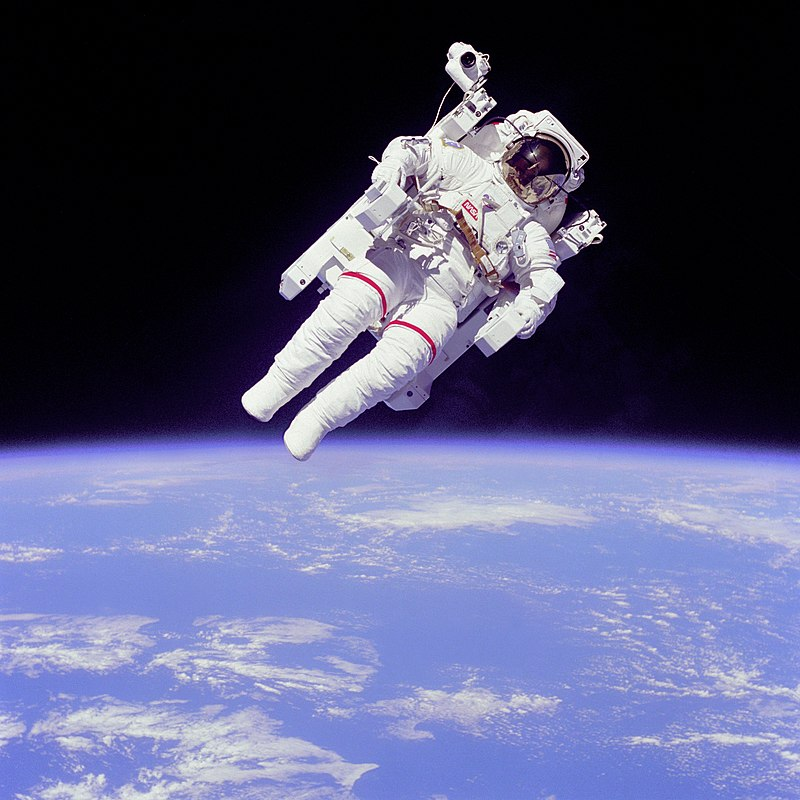

De acuerdo con la teoría del Big Bang, hace aproximadamente 13.8 billones de años el universo recién creado era de un estado de extremo calor y densidad, en muy poco tiempo se expandió rápidamente. Pasados 380 mil años el universo se volvió lo suficientemente frío para permitir a los protones y electrones combinarse, fase conocida como época de recombinación.
En el espacio exterior las estrellas, planetas y otros cuerpos celestes no se someten a ninguna fricción, por lo que pueden moverse libremente en sus órbitas. Sin embargo, el supuesto vacío del espacio no lo es del todo, contiene algunos átomos de hidrógeno por metro cúbico. La baja densidad de materia en el espacio exterior significa que la radiación electromagnética puede viajar grandes distancias sin dispersarse: la trayectoria libre media de un fotón en el espacio es de aproximadamente 10^23 km, o 10 billones de años luz.
El traje espacial de los astronautas los protege de la presión y la radiación. El cuerpo humano es vulnerable a condiciones de altitud en la atmósfera terrestre. La altitud donde la presión atmosférica conicide con la presión del vapor de agua se llama línea de Armstrong, en honor al médico estadounidense Harry G. Armstrong.  Se ubica a una altitud de 19.14 km. Por encima de la línea los fluidos en la garganta y pulmones se evaporan, la saliva y lagrimas. Para protección y supervivencia se requiere un traje o cápsula presurizada.23
 El espacio exterior dentro del sistema solar es llamado espacio interplanetario,
que se convierte en espacio interestelar en la heliopausa. El vacío del espacio exterior no es realmente vacío;
está poblado en parte con varias docenas de tipos de moléculas orgánicas descubiertas mediante espectroscopia de microondas.
Según la teoría del Big Bang, la radiación de los cuerpos negros de 2,7 K de temperatura quedó del 'big bang' y el origen
del universo llena el espacio, así como los rayos cósmicos, que incluyen núcleos atómicos ionizados y varias partículas subatómicas.
El espacio exterior dentro del sistema solar es llamado espacio interplanetario,
que se convierte en espacio interestelar en la heliopausa. El vacío del espacio exterior no es realmente vacío;
está poblado en parte con varias docenas de tipos de moléculas orgánicas descubiertas mediante espectroscopia de microondas.
Según la teoría del Big Bang, la radiación de los cuerpos negros de 2,7 K de temperatura quedó del 'big bang' y el origen
del universo llena el espacio, así como los rayos cósmicos, que incluyen núcleos atómicos ionizados y varias partículas subatómicas.
Geoespacio: El geoespacio está poblado por partículas con carga eléctrica y densidades muy bajas, cuyos movimientos son controlados por el campo magnético de la Tierra. Las tormentas geomagnéticas pueden perturbar a los cinturones de radiación y la ionosfera. Estas tormentas aumentan los flujos de electrones energéticos que pueden dañar permanentemente componentes electrónicos de satélites, interfiriendo con la comunicación por radio de onda corta y los sistemas GPS.36